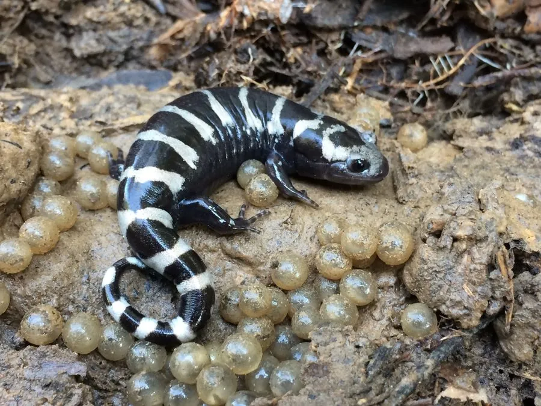

两栖动物 · 动物界
大理石钝口螈 Ambystoma opacum

北美东部的钝口螈，黑色身体上分布白色或银色横带，秋季在干涸的临时水塘产卵，雌螈会留在卵旁护卵。
- 分类
- 门脊索动物门纲两栖纲目有尾目科钝口螈科属钝口螈属
- 栖息环境
- 北美东部森林的落叶层、腐木和季节性临时水塘
- 地理分布
- 美国东部和东南部
- 保护级别
- IUCN 无危（LC）；非中国原产，在中国无保护级别
物种志
大理石钝口螈体长 9–12 厘米，身体粗短，皮肤光滑，背面呈黑色或深褐色，缀有白色、银灰色或浅灰色的横带和不规则斑块，看起来像大理石花纹；腹部黑色，四肢短小，尾侧扁。
它分布于美国东部和东南部的森林，平时藏在落叶、腐木和地下洞穴中，秋季其他两栖动物离开水塘时，它反而迁往已经干涸的临时水塘，在落叶下产卵。雌螈会盘在卵块旁守护，直到秋雨把水塘填满，幼虫孵化后在水中生活，翌年春夏完成变态。成年螈以昆虫、蚯蚓、蜗牛和小型节肢动物为食。大理石钝口螈的护卵行为和反季节繁殖，是研究两栖动物繁殖策略的典型例子。
形态与习性
- 食性昆虫、蚯蚓、蜗牛和小型节肢动物
- 体长约 9–12 cm
- 繁殖秋季在干涸的临时水塘产卵，雌螈护卵
- 活动节律夜行性，平时藏在落叶和腐木下
- 体色黑色底色配白色或银色横带
- 寿命野外约 10–15 年
趣味知识
- 大理石钝口螈在秋季产卵，等秋雨填满水塘后幼虫才孵化。
- 雌螈会盘在卵块旁守护，直到水塘积水。
- 它黑底白带的花纹像大理石，因此得名“大理石钝口螈”。